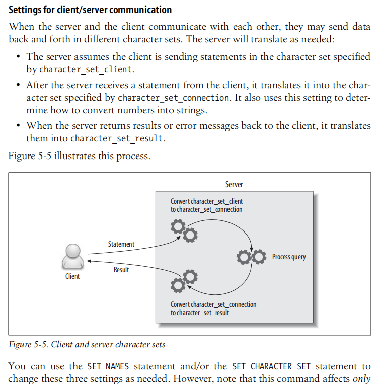

转自：明月逐人归
平时我们用MySQL，字符编码方式一般是 utf8 或者 utf8mb4，至于MySQL内部是如何处理编码问题的在日常开发中并没有十分关注，遇到最多的问题也无非是表中中文乱码和表情无法存储。对于编码不一致的问题，出问题是在所难免的，我们需要系统地了解下在MySQL内部字符集是如何配置和转化的。
对于正常运行的InnoDB存储引擎，在MySQL客户端输入show variables like 'character%';：
| Variable_name | Value |
|---|---|
| character_set_client | utf8mb4 |
| character_set_connection | utf8mb4 |
| character_set_database | utf8mb4 |
| character_set_filesystem | binary |
| character_set_results | utf8mb4 |
| character_set_server | utf8mb4 |
| character_set_system | utf8 |
| character_sets_dir | /usr/share/mysql/charsets/ |
可以看到在MySQL内部还有一堆配置，那么这些配置都代表什么呢？我们来一个个看下。
character_set_client
character_set_client为客户端使用的字符集，默认字符集是utf8。
character_set_connection
character_set_connection为连接层字符集，如果连接数据库时没有指定字符集，就会用这个，默认为utf8。
character_set_database
character_set_database为当前数据库的默认字符集，如果在创建数据库时没有选中这个，就会用这个，默认为utf8。
character_set_filesystem
character_set_filesystem为文件系统字符集。默认值是binary，这意味着不会发生转换。
character_set_results
character_set_results为数据库给客户端返回查询结果的编码格式。包括结果数据(如列值)、结果元数据(如列名)和错误消息。默认utf8。
character_set_server
character_set_server为服务器默认的编码格式，默认为latin1。
character_set_system
character_set_system为系统存储标识符（identifiers）的字符集，默认为utf8。不能进行更改。
character_sets_dir
character_sets_dir为字符集安装的目录。
我们发现MySQL有这么多字符集配置，试想一下，从一个客户端连接到MySQL服务器，到MySQL返回数据给客户端，中间的字符集是如何转化的？在《High Performance MySQL》一书中，有一节讲到了客户端与服务端通信时字符集的转换过程，如下图所示：

从上图的文字描述及图示我们可以得知，一个Statement 到 Result 是要经过一系列的字符转换过程。主要有以下过程：
character_set_client转至character_set_connection；character_set_connection转换为内部操作字符集，其确定方法如下：
CHARACTER SET设定值；DEFAULT CHARACTER SET设定值(MySQL扩展，非SQL标准)；DEFAULT CHARACTER SET设定值；character_set_server设定值。character_set_results。上面了解了MYSQL编码的基本概念，那么我们该怎么样设置呢？
更改MySQL的配置文件
在Windows平台上，配置文件名称为：my.ini，下面是在Windows平台MySQL相关的文件路径：
| File Name | Purpose |
|---|---|
| %WINDIR%\my.ini, %WINDIR%\my.cnf | Global options |
| C:\my.ini, C:\my.cnf | Global options |
| BASEDIR\my.ini, BASEDIR\my.cnf | Global options |
| defaults-extra-file | The file specified with –defaults-extra-file, if any |
| %APPDATA%\MySQL.mylogin.cnf | Login path options (clients only) |
通过找服务 -> MySQLX -> 属性 -> 可执行文件的路径来找到MySQL配置文件的路径，下面是我的路径：
1 | C:\ProgramData\MySQL\MySQL Server 8.0\my.ini |
在Linux平台，配置文件名称为：my.cnf，路径一般为/etc/mysql/my.cnf，下面是在Unix和类Unix平台MySQL相关的文件路径：
| File Name | Purpose |
|---|---|
| /etc/my.cnf | Global options |
| /etc/mysql/my.cnf | Global options |
| SYSCONFDIR/my.cnf | Global options |
| $MYSQL_HOME/my.cnf | Server-specific options (server only) |
| defaults-extra-file | The file specified with –defaults-extra-file, if any |
| ~/.my.cnf | User-specific options |
| ~/.mylogin.cnf | User-specific login path options (clients only) |
如下所示：
root@f07cbb42905f:/etc/mysql# ls
conf.d my.cnf my.cnf.fallback mysql.cnf mysql.conf.d下面以my.cnf配置为例，配置字符集为utf8mb4，也是我们最常用的。在my.cnf添加如下内容：
[client]
default-character-set = utf8mb4
[mysql]
default-character-set = utf8mb4
[mysqld]
character-set-client-handshake = FALSE
character-set-server = utf8mb4
collation-server = utf8mb4_unicode_ci
init_connect = 'SET NAMES utf8mb4'更新数据库或表字符集
更新指定数据库的字符集：
ALTER DATABASE test CHARACTER SET `utf8mb4` COLLATE `utf8mb4_general_ci`;更新指定表的字符集：
ALTER TABLE `TABLE_NAME` CONVERT TO CHARACTER SET `utf8mb4` COLLATE `utf8mb4_general_ci`; 最后附上MySQL支持的字符集：
mysql> SHOW CHARACTER SET;
| Charset | Description | Default collation | Maxlen |
|---|---|---|---|
| big5 | Big5 Traditional Chinese | big5_chinese_ci | 2 |
| dec8 | DEC West European | dec8_swedish_ci | 1 |
| cp850 | DOS West European | cp850_general_ci | 1 |
| hp8 | HP West European | hp8_english_ci | 1 |
| koi8r | KOI8-R Relcom Russian | koi8r_general_ci | 1 |
| latin1 | cp1252 West European | latin1_swedish_ci | 1 |
| latin2 | ISO 8859-2 Central European | latin2_general_ci | 1 |
| swe7 | 7bit Swedish | swe7_swedish_ci | 1 |
| ascii | US ASCII | ascii_general_ci | 1 |
| ujis | EUC-JP Japanese | ujis_japanese_ci | 3 |
| sjis | Shift-JIS Japanese | sjis_japanese_ci | 2 |
| hebrew | ISO 8859-8 Hebrew | hebrew_general_ci | 1 |
| tis620 | TIS620 Thai | tis620_thai_ci | 1 |
| euckr | EUC-KR Korean | euckr_korean_ci | 2 |
| koi8u | KOI8-U Ukrainian | koi8u_general_ci | 1 |
| gb2312 | GB2312 Simplified Chinese | gb2312_chinese_ci | 2 |
| greek | ISO 8859-7 Greek | greek_general_ci | 1 |
| cp1250 | Windows Central European | cp1250_general_ci | 1 |
| gbk | GBK Simplified Chinese | gbk_chinese_ci | 2 |
| latin5 | ISO 8859-9 Turkish | latin5_turkish_ci | 1 |
| armscii8 | ARMSCII-8 Armenian | armscii8_general_ci | 1 |
| utf8 | UTF-8 Unicode | utf8_general_ci | 3 |
| ucs2 | UCS-2 Unicode | ucs2_general_ci | 2 |
| cp866 | DOS Russian | cp866_general_ci | 1 |
| keybcs2 | DOS Kamenicky Czech-Slovak | keybcs2_general_ci | 1 |
| macce | Mac Central European | macce_general_ci | 1 |
| macroman | Mac West European | macroman_general_ci | 1 |
| cp852 | DOS Central European | cp852_general_ci | 1 |
| latin7 | ISO 8859-13 Baltic | latin7_general_ci | 1 |
| utf8mb4 | UTF-8 Unicode | utf8mb4_general_ci | 4 |
| cp1251 | Windows Cyrillic | cp1251_general_ci | 1 |
| utf16 | UTF-16 Unicode | utf16_general_ci | 4 |
| utf16le | UTF-16LE Unicode | utf16le_general_ci | 4 |
| cp1256 | Windows Arabic | cp1256_general_ci | 1 |
| cp1257 | Windows Baltic | cp1257_general_ci | 1 |
| utf32 | UTF-32 Unicode | utf32_general_ci | 4 |
| binary | Binary pseudo charset | binary | 1 |
| geostd8 | GEOSTD8 Georgian | geostd8_general_ci | 1 |
| cp932 | SJIS for Windows Japanese | cp932_japanese_ci | 2 |
| eucjpms | UJIS for Windows Japanese | eucjpms_japanese_ci | 3 |
《High Performance MySQL》
Post author: Mingshan
Copyright Notice: All articles in this blog are licensed under BY-NC-SA unless stating additionally.
[1] 明月逐人归: https://mingshan.fun/2020/01/07/mysql-charset/[2] Server System Variables: https://dev.mysql.com/doc/refman/5.7/en/server-system-variables.html[3] 更改MySQL数据库的编码为utf8mb4: https://www.jianshu.com/p/f7d7609de6b0[4] 深入Mysql字符集设置: http://www.laruence.com/2008/01/05/12.html[5] https://mingshan.fun/2020/01/07/mysql-charset/: https://mingshan.fun/2020/01/07/mysql-charset/ "理解MySQL字符集"[6] BY-NC-SA: https://creativecommons.org/licenses/by-nc-sa/4.0/null